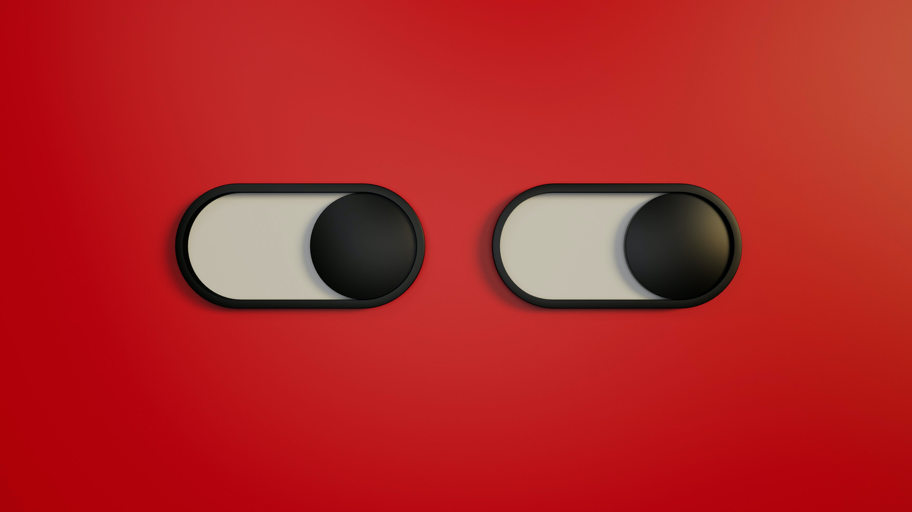

-

Selamat Datang!
di qoyyimbro
-

Baca-baca
berbagai hal random
-
Bagikan Tulisanmu!
bagikan cerita
unikmu di sini
"...bahkan Kita belum bicara..."
Kata Hati Menenggelamkan Diri, Waktunya Berenang ke Tepian!
Terperosok, Terbuai oleh Indahnya 'Istiqomah'
Tak hanya Developer, Tuhan juga Punya Source Code
Upcoming...
"...bahkan Kita belum bicara..."
Kata Hati Menenggelamkan Diri, Waktunya Berenang ke Tepian!
Terperosok, Terbuai oleh Indahnya 'Istiqomah'
Tak hanya Developer, Tuhan juga Punya Source Code
Upcoming
Upcoming...
Upcoming...